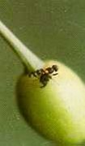
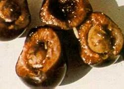

Cseresznyelégy
Rhagoletis cerasi
Egynemzedékes furólégy, nyűve a cseresznye, ritkábban a meggy termésében fejlődik.< A telet báb alakban a talajban vészeli át. Tavasszal, a cseresznye "színesedése" idején rajzik elő. A nőstények tojásaikat egyesével a cseresznye héja alá tojják be. A kikelő lárva a gyümölcs húsában károsít. A termés belső állományát, szövetnedveit feléli, ürülékével szennyezi, és fogyszthatatlanná teszi. A vegyszeres védekezést imágórajzás idején kell elvégezni. A rajzás sárga színű, ragasztós felületű lapokkal jól megfigyelhető. A sárga fogólapok egyedi vagy csekély számú fa esetén védekezésre is használhatók.
Védekezés:
- Imágórajzáskori állománypermetezéssel.
Javasolt szerek:
|  |